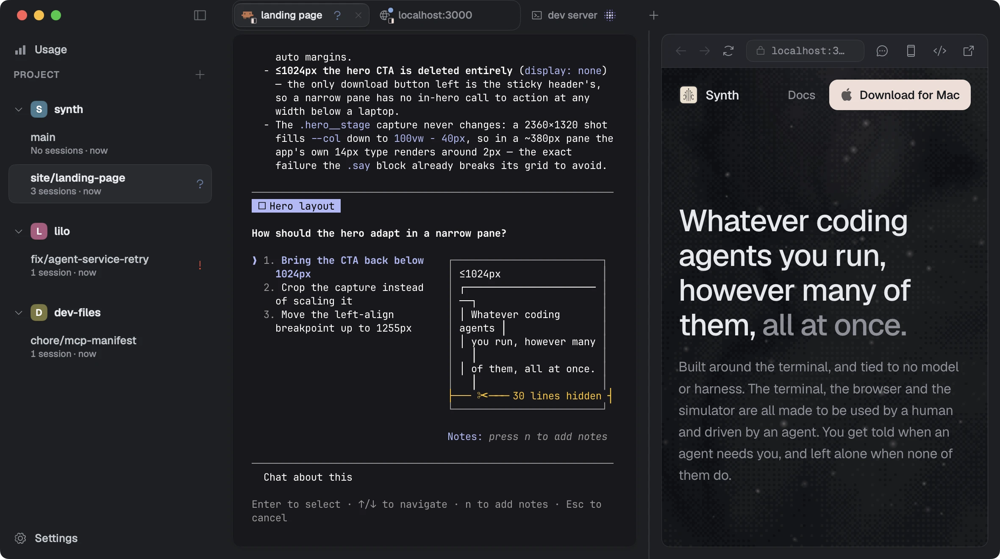
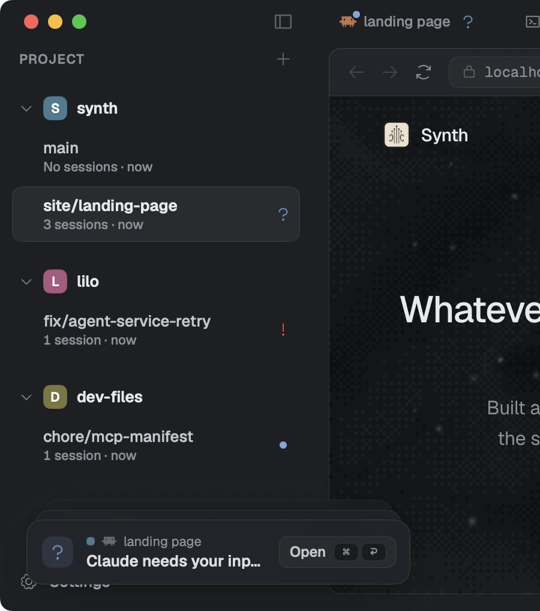
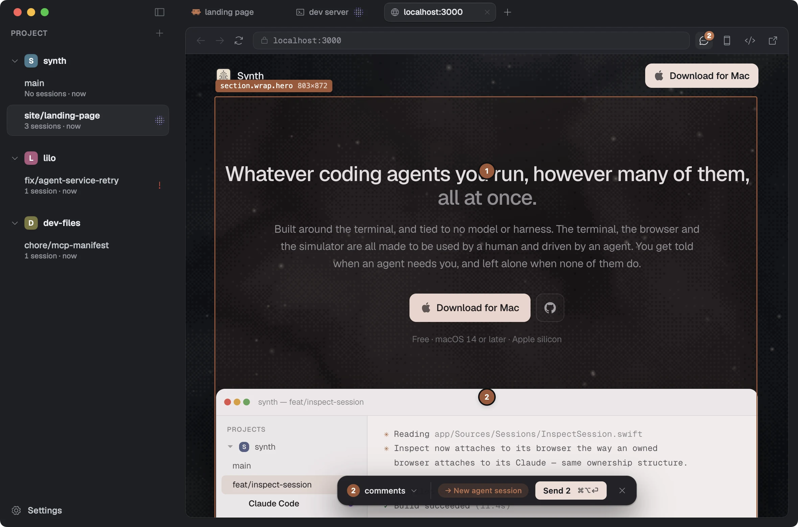
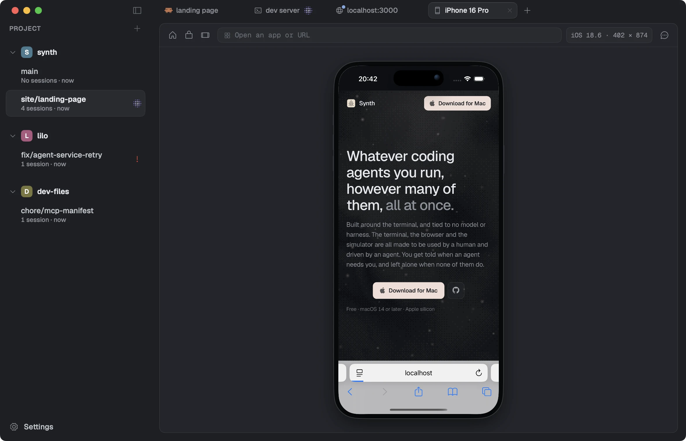
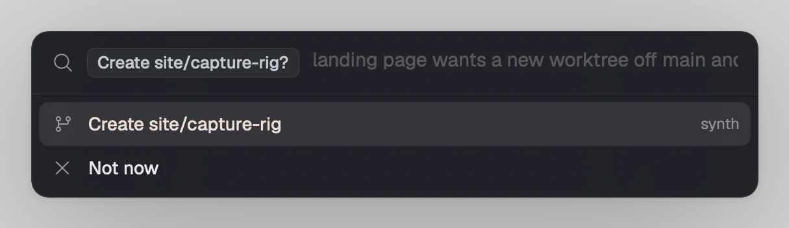

Synth
SynthInstall it and it just works
You don't point Synth at anything or configure individual agents. What you have installed is what shows up, and it keeps up on its own when that changes.
Built around the terminal, and tied to no model or harness. The terminal, the browser and the simulator are all made to be used by a human and driven by an agent. You get told when an agent needs you, and left alone when none of them do.

Whichever agent is best this month is unlikely to be the one that's best next month. Synth detects what you already have installed and integrates with them all, so a new model or a new harness is something you adopt rather than something you migrate to.
You don't point Synth at anything or configure individual agents. What you have installed is what shows up, and it keeps up on its own when that changes.
Every agent gets the same tools, including a real browser and a booted iPhone it can drive. You don't wire that up, and you don't wire it up again for the next one.
Your keys, your layout and everything you have open are all the same afterwards. The only difference is which agent is running inside them. Next month you can change your mind again.
Work is organised by project and by branch, each with its own code and its own sessions running inside it. Agents can hand off work to other branches, so however much is in flight, it stays one list you can take in at a glance.
Your setup script runs in every new branch: copy the .env across, install dependencies, whatever the new copy needs. The sessions you always want are open by the time you look at it.
The other branch is already on disk exactly as you left it, sessions and all, so you click it and carry on where you stopped. Nothing to stash and nothing to check out.
Once a branch is merged and clean, Synth archives it and reclaims the folder, so what you glance at is what is still going on. The row comes back from ⌘K whenever you want it.
Every session has a state, whether it's an agent mid-turn or a terminal running a build. Synth notifies you when one needs you, a question or a failure. Everything else, working or running or finished, you read at a glance.

An agent thinking and an agent stuck waiting for you look identical in a terminal. In Synth the one waiting is marked in the sidebar, so you can see it without opening anything.
Get to whatever agent or terminal needs you most with a single motion. Keeping you in flow state for longer and allowing you to unblock work quicker.
Each branch shows its pull request beside it, whether that's open, merged, closed or in the merge queue.
It can open your app in a real browser, tap through it on a booted iPhone, and start a new branch when work belongs elsewhere. You can watch any of it, and take over whenever you like.

The agent opens your app in a real browser window and clicks, types and scrolls through it. You can use the same window, click any element to leave a note, and send your comments over together.
From that window it can also read the console and the network, throttle the connection to see the page on a slow one, and record the run as a video rather than describing it afterwards.

Boot one from the fleet you already have installed, then tap, type and swipe into it. The agent uses the same screen you are looking at, and can install a build, launch it, open a URL or turn the device on its side.
Synth reads the device's screen directly instead of opening Simulator.app, so the session keeps working when that window would have been minimised, on another Space, or closed by Xcode entirely.

When work belongs somewhere else, the agent writes the brief and asks for a branch of its own. You see the project, the base and what it means to do; one click makes it and starts an agent inside that already knows what it is there for.
The alternative is stopping what you're doing, making the branch yourself, and typing the context out again.
The terminal is libghostty, drawn on the GPU. The application is Swift, not Electron. ⌘K, then ⌘T, then ⌘1, one after another, and it keeps up.
A tree you glance at only works if glancing is free. The moment checking costs you something you stop doing it, and you're back to going and looking.
Free · macOS 14 or later · Apple silicon · signed and notarised